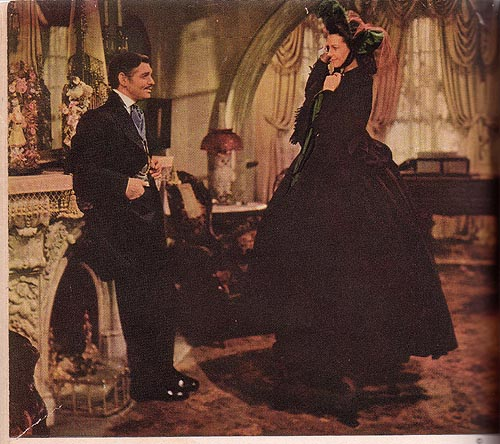

Illustration for Gone with the Wind: Motion Picture Edition
(New York: The Macmillan Company, 1940)
CAPTION: "How do I look?" Scarlett cried, pirouetting for his benefit and tossing her head so that the plume danced. She looked attractively saucy and the green of the lining made her eyes dark emerald and sparkling. (See page 91)"